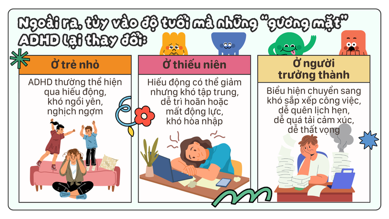
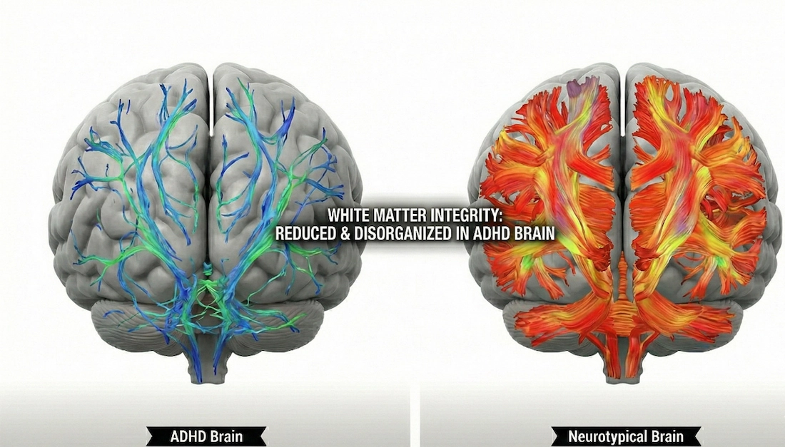

NHẬN DIỆN ADHD:
Khái niệm: Rối loạn tăng động giảm chú ý (ADHD) là một rối loạn phát triển thần kinh, đặc trưng bởi biểu hiện giảm chú ý và/hoặc tăng động/bốc đồng diễn ra thường xuyên, xuất hiện ở nhiều môi trường và gây ảnh hưởng đến chức năng sống (Hiệp Hội Tâm Thần Mỹ, 2013)
Nguồn: Cleveland Clinic - Attention Deficit Hyperactivity Disorder (ADHD)

Xem bài viết: Nhiều mặt của ADHD
Nguồn: Rối loạn TĂNG ĐỘNG GIẢM CHÚ Ý- ADHD- 6 dấu hiệu và triệu chứng của bệnh? | Psych2Go Vietnam
NGUYÊN NHÂN - HẬU QUẢ
2.1. Nguyên nhân:
Y học hiện đại khẳng định ADHD là một tình trạng y sinh học phức tạp, hoàn toàn không xuất phát từ yếu tố tâm lý lười biếng hay do giáo dục sai cách, mà đến từ các yếu tố sau:
- Yếu tố di truyền: Các nghiên cứu chứng minh hệ số di truyền của ADHD rất cao, dao động từ 70% đến 80%.
- Cấu trúc và chức năng não bộ: Chẩn đoán hình ảnh học (fMRI) cho thấy có sự chậm phát triển hoặc giảm lưu lượng máu hoạt động tại vùng vỏ não trước trán -- trung tâm điều hành nhận thức và kiểm soát xung động.
- Chất dẫn truyền thần kinh: Sự rối loạn điều hòa và thiếu hụt hai chất cốt lõi là Dopamine (động lực) và Norepinephrine (sự tập trung) làm gián đoạn hệ thống truyền tải tín hiệu của não bộ.

Xem: ADHD brain vs normal brain
2.2. Hậu quả:
- Suy giảm hiệu suất công việc và học tập: Dễ rơi vào vòng lặp trì hoãn, chậm deadline, khó hoàn thành mục tiêu dài hạn và dễ gặp hội chứng kiệt sức (burnout) do khả năng quản lý thời gian kém.
- Tổn thương tâm lý: Việc liên tục đối mặt với thất bại và những định kiến từ xung quanh (bị gắn mác "lười biếng", "thiếu tập trung") dễ kích hoạt trạng thái tự ti, lo âu kéo dài hoặc trầm cảm.
- Trở ngại trong các mối quan hệ: Tính bốc đồng, hấp tấp và xu hướng hay ngắt lời người khác dễ dẫn đến những hiểu lầm, xung đột không đáng có với gia đình, bạn bè và đồng nghiệp.
- Khó khăn trong quản lý cuộc sống: Thường xuyên làm thất lạc đồ đạc, gặp thách thức trong chi tiêu (dễ mua sắm bốc đồng) và duy trì giờ giấc sinh hoạt khoa học.
Mối liên hệ lâm sàng: Rất nhiều trường hợp ADHD có chẩn đoán đồng mắc với các rối loạn thần kinh khác. Ví dụ, khoảng 60% - 80% cá nhân mắc hội chứng TIC hoặc Hội chứng Tourette cũng được ghi nhận có các biểu hiện của ADHD, khiến việc thích nghi xã hội trở nên phức tạp hơn.
Các cơ sở điều trị tại TP.HCM và Hà Nội
- Tại TP.HCM:
- Bệnh viện Tâm thần TP. HCM:
- Cơ sở 1 : Số 766 đường Võ Văn Kiệt, Phường Chợ Quán, Thành phố Hồ Chí Minh.
- Cơ sở 2 : số 26 đường Bình Minh, ấp 22, xã Bình Lợi, Thành phố Hồ Chí Minh.
- Cơ sở 3 : 165B Phan Đăng Lưu, Phường Cầu Kiệu, Thành phố Hồ Chí Minh.
- Bệnh viện Nhi Đồng:
- Nhi đồng 1: 341 Sư Vạn Hạnh, Vườn Lài, TP.HCM
- Nhi đồng 2: 14 Lý Tự Trọng, Sài Gòn, TP.HCM
- Nhi đồng Thành phố: 15 Võ Trần Chí, Tân Nhựt, TP.HCM
- Bệnh viện Đại học Y Dược TP. HCM:
- Cơ sở 1: 215 Hồng Bàng, Chợ Lớn, TP.HCM.
- Bệnh viện Nhân dân 115: 527 Sư Vạn Hạnh, Hòa Hưng, TP.HCM.
- Bệnh viện Tâm thần TP. HCM:
- Tại Hà Nội:
- Viện Sức khỏe tâm thần - Bệnh viện Bạch Mai: Tòa nhà T4, T5, T6, Bệnh viện Bạch Mai, số 78 Giải Phóng, Đống Đa, Hà Nội.
- Khoa Tâm thần - Bệnh viện Nhi Trung ương: 18/879 La Thành, Đống Đa, Hà Nội
- Trung tâm Y khoa số 1 - Bệnh viện Đại học Y Hà Nội: Nhà A5, số 1 Tôn Thất Tùng, Đống Đa, Hà Nội
ĐIỀU TRỊ - HỖ TRỢ
- Can thiệp Y khoa (Dưới chỉ định của bác sĩ chuyên khoa):
Thuốc kích thích thần kinh trung ương:
- Amphetamines: Là thuốc ADHD được dùng dưới dạng uống, những thành phần tương tự Amphetamines là dextroamphetamine hoặc lisdexamfetamine.
- Methamphetamine: Ngoài công dụng làm giảm các triệu chứng của ADHD, Methamphetamine còn gây ra các tác dụng không mong muốn khác là giảm sự thèm ăn, tăng huyết áp.
- Methylphenidate: Cơ chế hoạt động của Methylphenidate là giúp não tái thu hồi hormone norepinephrine và dopamine. Methylphenidate được dùng dưới dạng viên uống hoặc dán dưới da.
Thuốc điều trị ADHD không chứa chất kích thích:
- Atomoxetine: Cơ chế tác dụng của thuốc là giúp kéo dài thời gian hoạt động của hormone có lợi norepinephrine trong não. Atomoxetine được chỉ định với liều lượng 1 lần/ ngày. Trong một vài trường hợp, Atomoxetine gây tác dụng bất lợi trên gan như vàng da, vàng mắt, mệt mỏi, bụng mềm. Do đó, nếu bệnh nhân có tiền sử bệnh gan hoặc xuất hiện các triệu chứng kể trên trong thời gian dùng thuốc cần thông báo ngay với bác sĩ.
- Clonidine: Thuốc được chỉ định để làm giảm hiếu động, bốc đồng và mất tập trung. Ngoài ra, Clonidine còn có công dụng hạ huyết áp. Do đó, nếu bệnh nhân có các vấn đề liên quan đến huyết áp thấp, bác sĩ cần thận trọng khi chỉ định.
- Guanfacine: Là thuốc thường được chỉ định để điều trị tăng huyết áp. Ngoài ra, Guanfacine còn giúp cải thiện các vấn đề về trí nhớ, hành vi, hiếu động liên quan đến ADHD.
- Liệu pháp thể chất, tâm lý:
- Tập thể dục thường xuyên: Giảm các triệu chứng ADHD và cải thiện khả năng tập trung, động lực, trí nhớ và tâm trạng. Hoạt động thể chất đốt cháy năng lượng dư thừa có thể dẫn đến tính bốc đồng. Nó cũng ngay lập tức làm tăng mức độ dopamine, norepinephrine và serotonin trong não, những chất ảnh hưởng đến sự tập trung và chú ý.
- Ăn uống lành mạnh: Bổ sung protein và carbohydrate phức tạp vào mỗi bữa ăn hoặc bữa phụ. Những thực phẩm này sẽ giúp tỉnh táo hơn đồng thời giảm bớt sự hiếu động thái quá. Chúng cũng sẽ cung cấp nguồn năng lượng ổn định và lâu dài. Đồng thời, cần bổ sung thêm axit béo omega-3 vào chế độ ăn uống. Ngày càng nhiều nghiên cứu cho thấy omega-3 cải thiện khả năng tập trung tinh thần ở những người mắc chứng ADHD.
- Thiền chánh niệm: Các nhà nghiên cứu cho biết, về lâu dài, thiền định làm tăng hoạt động ở vỏ não trước trán, phần não chịu trách nhiệm về sự chú ý, lập kế hoạch và kiểm soát xung động. Theo một số khía cạnh, thiền định là đối lập với ADHD. Mục tiêu của thiền định là rèn luyện bản thân để tập trung sự chú ý nhằm có được cái nhìn khách quan. Ngoài việc giúp chống lại sự xao nhãng tốt hơn, giảm tính bốc đồng và cải thiện khả năng tập trung, việc phát triển chánh niệm thông qua thiền định cũng có thể giúp kiểm soát cảm xúc tốt hơn --- điều mà nhiều người lớn mắc ADHD đang gặp khó khẫn.
- Yoga: Rèn luyện sự cân bằng và tĩnh lặng bằng cách giữ yên tư thế trong thời gian dài. Khi cảm thấy quá tải hoặc mất kiểm soát, bạn có thể tìm đến các kỹ thuật yoga để làm mới bản thân và lấy lại sự cân bằng tinh thần. https://www.helpguide.org/es/tdah/tratamiento-para-el-tdah-en-adultos
Nguồn tham khảo:
https://www.vinmec.com/vie/bai-viet/chi-dinh-dung-thuoc-dieu-tri-adhd-vi
Nguồn: Rối Loạn Tăng Động Giảm Chú ý (P3) Điều trị & Thuốc ADHD | ThS. BS. Đào Thị Thu Hương | Hỏi Bác sĩ
CÂU HỎI NÂNG CAO NHẬN THỨC
Hoàn toàn không. Y học hiện đại khẳng định ADHD là một rối loạn phát triển thần kinh mang tính y sinh học nghiêm trọng. Các bằng chứng khoa học cho thấy người mắc hội chứng này có sự thiếu hụt các chất dẫn truyền thần kinh (Dopamine và Norepinephrine) và sự chậm phát triển ở vùng vỏ não trước trán. Mạng xã hội hay thiết bị điện tử chỉ là các tác nhân gây nhiễu môi trường, làm bộc lộ hoặc trầm trọng hơn triệu chứng chứ hoàn toàn không phải là nguyên nhân gốc rễ gây ra ADHD.
Tên gọi "giảm chú ý" dễ gây hiểu lầm rằng họ không thể tập trung. Thực chất, vấn đề của người ADHD không phải là thiếu sự tập trung, mà là khó điều khiển sự tập trung một cách chủ động. Khi gặp một chủ đề họ cực kỳ hứng thú hoặc chịu áp lực sát giờ, não bộ họ sẽ rơi vào trạng thái "siêu tập trung" (hyperfocus) nhờ lượng Dopamine tăng đột biến. Ngược lại, họ sẽ cực kỳ chật vật để duy trì năng lượng tinh thần đối với những nhiệm vụ lặp đi lặp lại hoặc thiếu tính kích thích.
ADHD là một hội chứng mãn tính. Dù các triệu chứng tăng động hình thể (như chạy nhảy, ngọ nguậy) có xu hướng giảm dần hoặc chuyển hóa sang dạng bồn chồn bên trong khi trưởng thành, thì các triệu chứng giảm chú ý và bốc đồng vẫn tiếp tục kéo dài. Người lớn hoàn toàn có ADHD (thường di chứng từ thời thơ ấu nhưng chưa được chẩn đoán), biểu hiện qua việc quản lý cuộc sống kém, trì hoæn kinh niên, thay đổi công việc liên tục và dễ bị kiệt sức (burnout).
ADHD hiếm khi tồn tại đơn độc mà thường đi kèm với các rối loạn đồng mắc. Các nghiên cứu lâm sàng chỉ ra rằng có tới 60% - 80% cá nhân mắc các rối loạn vận động/phát âm không kiểm soát (như hội chứng TIC hoặc hội chứng Tourette) có chẩn đoán đồng mắc với ADHD. Sự kết hợp này làm tăng độ phức tạp trong việc điều chỉnh hành vi và đòi hỏi các bác sĩ phải có phác đồ can thiệp toàn diện, cá nhân hóa.
LIÊN HỆ
(Gửi tin nhắn và liên hệ nhanh)
Nhóm học sinh thực hiện dự án Zaphyr
Email: dtbn11081009@gmail.com